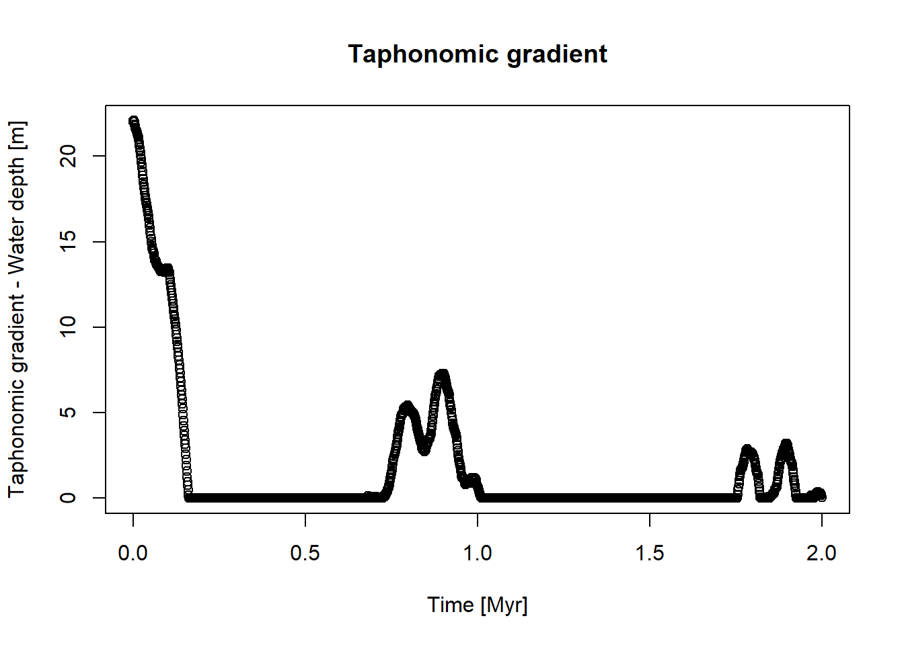
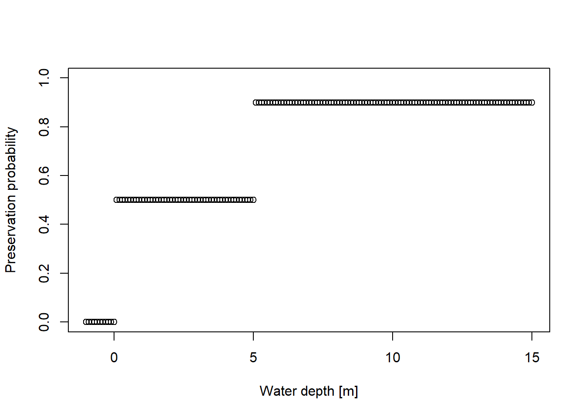
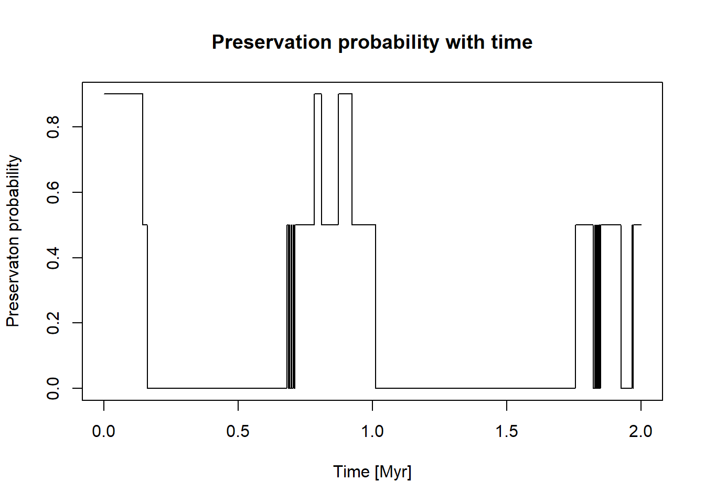
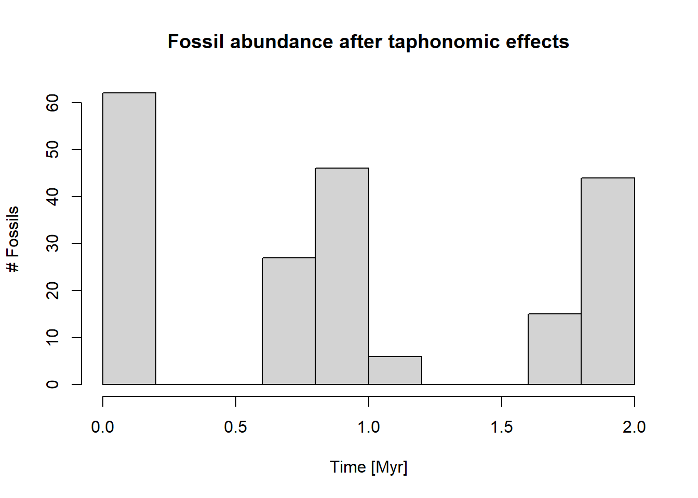
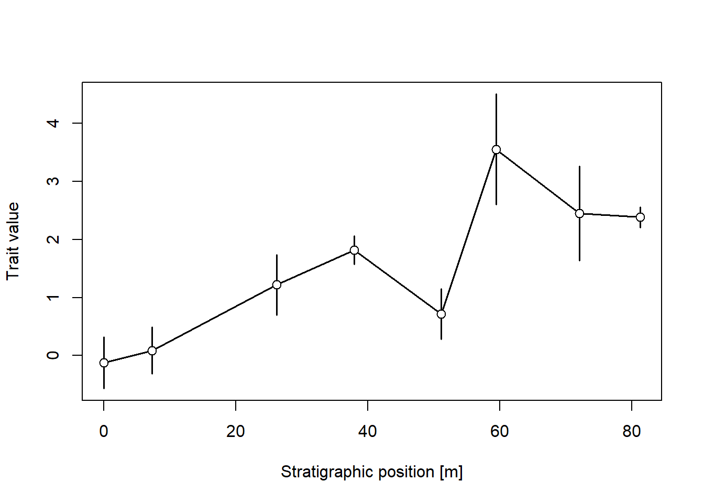
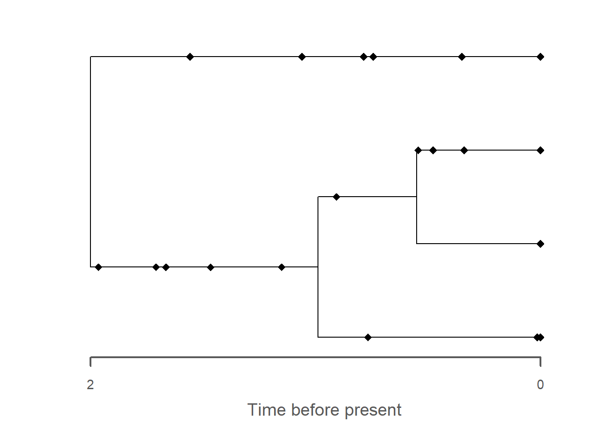
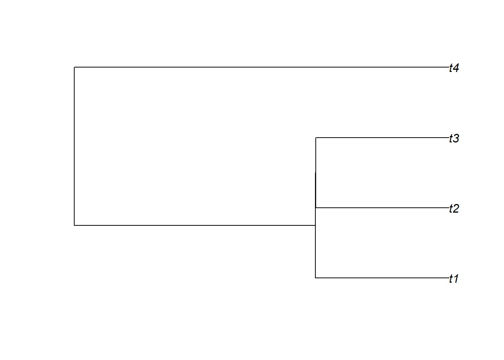
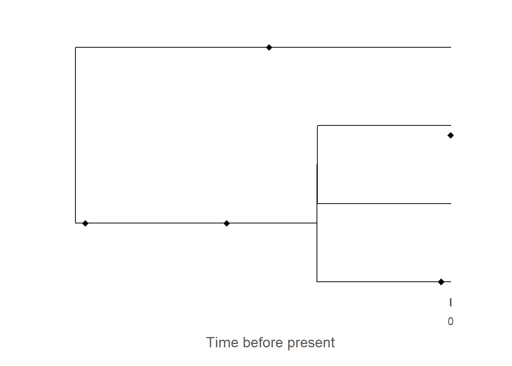

In this practical, we go through some advanced topics, such as modeling taphonomic effects, and transforming phylogenetic data (time trees and fossils).
Introduction
In this workshop, we have gone through the standard examples of stratigraphic paleobiology, including how stratigraphic biases such as gaps, changes in sedimentation rate and ecological gradients change our perception of last occurrences, fossil abundance, and stratophenetic change. These are just examples of general principles of how stratigraphic architectures modify observations of past (not necessarily only) biotic change. Abstracting this, there are two modifications to temporal data by stratigraphy:
Change in observation probability, e.g, due to niche models or taphonomic effects.
Misaglignmet of the stratigraphic and time domain due to changes in sedimentation rate and hiatuses. This includes removal of data due to gaps.
These effects apply universally to all types of data observable in the stratigraphic record, e.g, proxy records derived from fossil data.
Naturally, the modeling framework of the StratPal package expands to this more general setting. In this practical, we explore how these general principles apply to two advanced topics: Taphonomy and phylogenetics.
Code cheat sheet
Modeling taphonomy
Modeling taphonomy follows the same principles as modeling ecology. You need to define two function:
a function ctc describing the change in taphonomic conditions with time (corresponding to the change in gradient with time for ecology).
a function pres_potential that specifies how likely a fossil is to be preserved given some taphonomic conditions (equivalent to the niche definiton for ecology). Note that this requires you to write your own functions.
Both can then be passed to the function apply_taphonomy (instead of apply_ecology)
library(StratPal)library(admtools)# assuming taphonomy is driven by water depthpos ="2km"ctc =approxfun(x = scenarioA$t_myr, scenarioA$wd_m[,pos])t = scenarioA$t_myrplot(x = t, y =ctc(t),xlab ="Time [Myr]",ylab ="Taphonomic gradient - Water depth [m]",main ="Taphonomic gradient")

# preservation probability# * 0 for terrestrial environments, # * 0.5 for shallow water# * and 0.9 for deeper waterpres_potential=function(x){ p =rep(NA, length(x)) p[x<=0] =0 p[x >0& x <=5] =0.5 p[x>5 ] =0.9return(p)}wds =seq(-1, 15, by =0.1)plot(x = wds,y =pres_potential(wds),xlab ="Water depth [m]",ylab ="Preservation probability",ylim =c(0,1))

Combining both functions yields the preservation probability with time:
plot(x = t, y =pres_potential(ctc(t)),xlab ="Time [Myr]",ylab ="Preservaton probability",type ="l",main ="Preservation probability with time")

You can now incorporate taphonomic effects into your pipeline by passing those functions to apply_taphonomy:
p3(rate =10, from =0, to =2, n =1000) |>apply_taphonomy(pres_potential = pres_potential, ctc = ctc) |>hist(main ="Fossil abundance after taphonomic effects",ylab ="# Fossils",xlab ="Time [Myr]")

Note that because of the generality of the implementation, taphonomic effects can immediately be incorporated into a model selection workflows in combination with the paleoTS package and stratigraphic effects:
library(paleoTS) # load paleoTS package for model selection & plottingpos ="2km"adm =tp_to_adm(t = scenarioA$t_myr, h = scenarioA$h_m[,pos],T_unit ="Myr",L_unit ="m")temp_res =0.1# temporal resolution in Myrseq(min_time(adm), max_time(adm), by = temp_res) |># time steps where the trait evolution is simulatedrandom_walk_sl(sigma =1, mu =3, y0 =0, intrapop_var =1, n_per_sample =5) |># simulate trait evolutionapply_taphonomy(pres_potential = pres_potential, ctc = ctc) |>time_to_strat(adm, destructive =TRUE) |>reduce_to_paleoTS() |># transform into stratigraphic domainplot(xlab =paste0("Stratigraphic position [",get_L_unit(adm),"]"), # plotylab ="Trait value")

Phylogenetics
Age-depth models can be used to transform any type of data from the time to the stratigraphic domain. Here we give an example using phylogenetic trees (time trees).
library(FossilSim)library(ape)tree = ape::rbdtree(birth =2, death =1, Tmax =max_time(adm))fossils = FossilSim::sim.fossils.poisson(rate =2, tree = tree)plot(fossils, tree)

# plot phylogenetic tree in stratigraphic domaintree_strat = tree |>time_to_strat(adm)plot(tree_strat)

# add fossils to plot - note that the reversal via `rev_dir`# this is necessary bc fossils are represented in time before present# whereas the age-depth model counts time from 0 forwardsfossils_strat = fossils |>rev_dir(ref =max_time(adm)) |>time_to_strat(adm) |>rev_dir(ref =max_height(adm)) |>plot(tree_strat)

Tasks
Task 4.1: Taphonomic effects
Model a taxon that has a preservation probability of 0.2 in water depths lower than 20 m and a preservation probablity of 0.9 in water deeper than 20 m.
How abundant is this taxon at different locations on the platform? From your modeling results along, is there any way to distinguish these taphonomic effect from an ecological effect?
Task 4.2: Phylogenetic trees in stratigraphic context
Simulate an FBD (time)tree over the duration of the age-depth model and transform it at different locations using the age-depth model.
Simulate some fossils along the tree using the FossilSim package.
How are the trees affected at the different locations? What are the most obvious visual changes in their topology?
Solutions
Solution Task 4.1: Taphonomic effects
Model a taxon that has a preservation probability of 0.2 in water depths lower than 20 m and a preservation probability of 0.9 in water deeper than 20 m.
How abundant is this taxon at different locations on the platform? From your modeling results along, is there any way to distinguish these taphonomic effect from an ecological effect?
Let’s first collect all age-depth models in a list for easy access:
adm_list =list() # storage for age-depth modelsdist =paste(seq(2, 12, by =2), "km", sep ="") # distances from shorefor (pos in dist){ # construct ADMs for all distances adm_list[[pos]] =tp_to_adm(t = scenarioA$t_myr, h = scenarioA$h_m[,pos],T_unit ="Myr",L_unit ="m")}
# focus on 2 km offshorepos ="2km"amd = adm_list[[pos]]pres_potential=function(x){ p =rep(NA, length(x)) p[ x <=20] =0.2 p[x>20 ] =0.9return(p)}wds =seq(-1, 35, by =0.1)plot(x = wds,y =pres_potential(wds),xlab ="Water depth [m]",ylab ="Preservation probability",ylim =c(0,1))
The most obvious change is the collapse of branches over gaps, leading to the apparent creation of hard polytomies. All fossils that were placed on these branches are removed as they coincide with the gaps, leading to an overall reduced number of fossils on the tree. As with the trait evolution, the gaps lead to an apparent increase in the rate of evolution, here expressed as parallel branching across the tree.